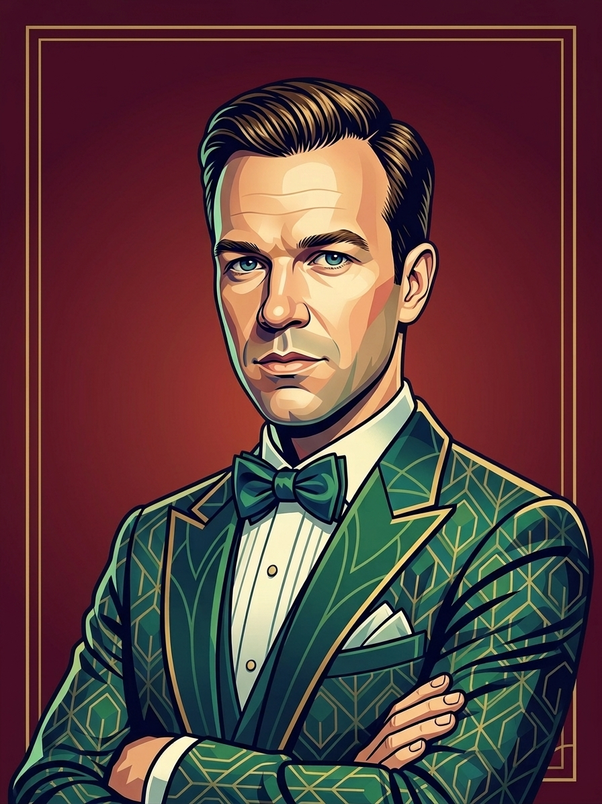

hier steht ein kurzer satz der beschreibt wer du bist und was dich antreibt, irgendwas witziges und ehrliches halt
das wichtigste in kürze, ohne langweiligen lebenslauf
hier kommt der erste absatz über dich. wer bist du, was treibt dich an, was hast du so gemacht in deinem leben, und warum stehst du morgens auf. schreib so wie du reden würdest wenn dich jemand auf einer party fragt was du eigentlich machst. ehrlich, ein bisschen selbstironisch, aber mit dem selbstbewusstsein dass du weisst was du kannst. das hier sind ungefähr vier bis fünf sätze und ja das ist die richtige länge.
und hier kommt der zweite absatz darüber was dich anders macht. dein ansatz, deine art zu denken, was leute über dich sagen. vielleicht auch warum die normalen karrierewege nie so richtig für dich funktioniert haben. das sind so drei bis vier sätze und es fühlt sich richtig an.
fähigkeiten, werkzeuge und sachen die ich wirklich gut kann
hier steht ein kurzer satz was diese fähigkeit ist und warum du gut darin bist
hier steht ein kurzer satz was diese fähigkeit ist und warum du gut darin bist
hier steht ein kurzer satz was diese fähigkeit ist und warum du gut darin bist
hier steht ein kurzer satz was diese fähigkeit ist und warum du gut darin bist
hier steht ein kurzer satz was diese fähigkeit ist und warum du gut darin bist
hier steht ein kurzer satz was diese fähigkeit ist und warum du gut darin bist
zwei versuche, die welt zu verändern. die welt hat sich gewehrt.
nebenprojekte, lösungen und sachen die ich einfach cool fand
vier bücher geschrieben. lesekreise wurden nicht gegründet.
die themen über die ich nachdenke, auch wenn mich niemand fragt